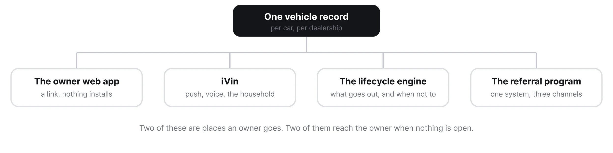
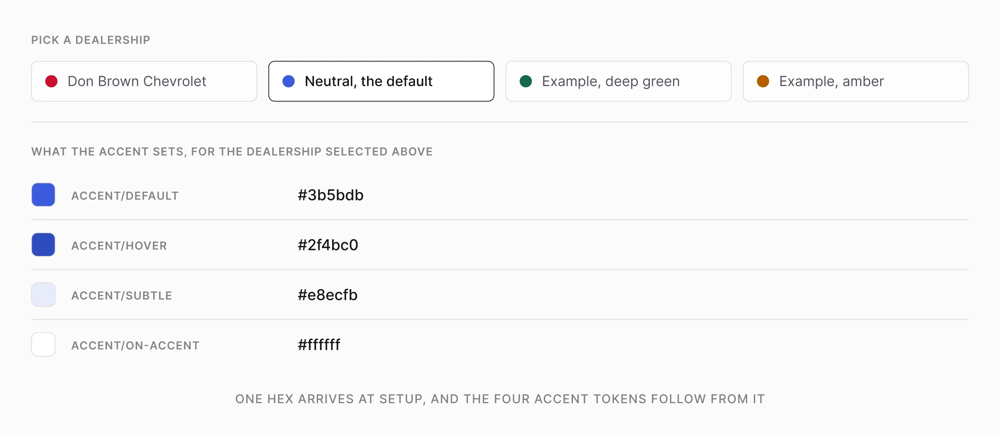
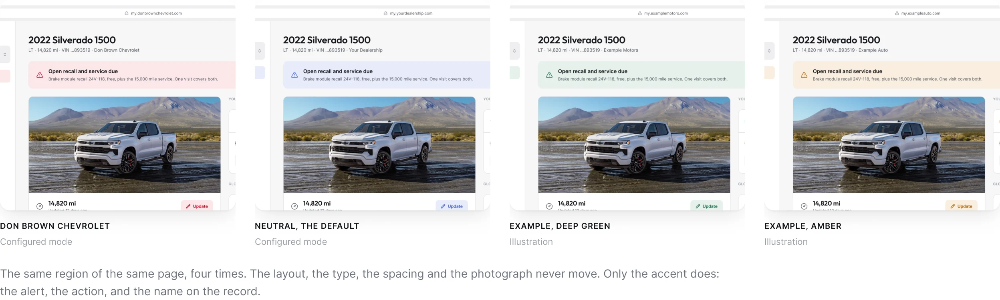
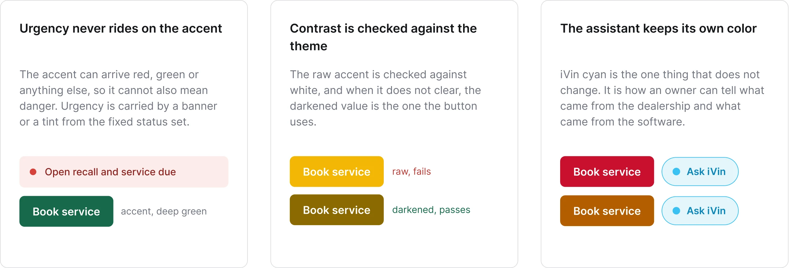
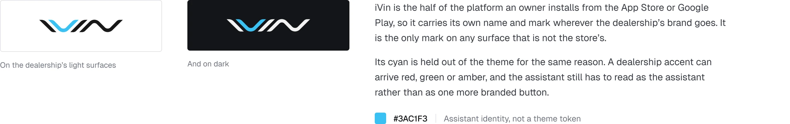
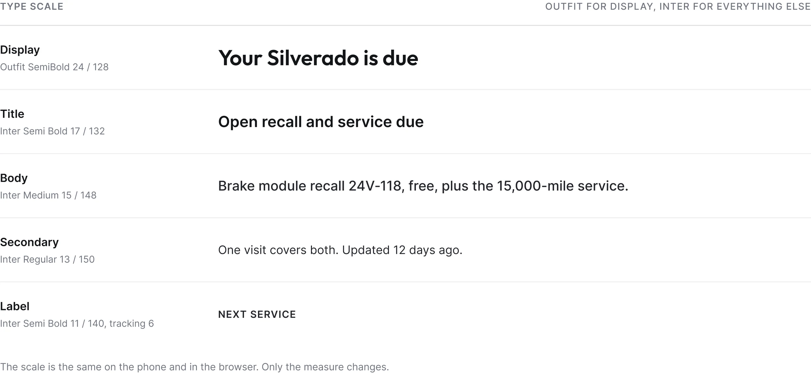
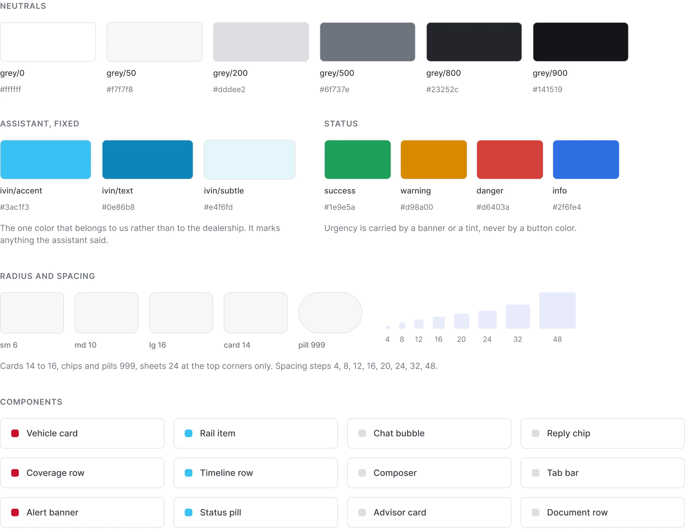
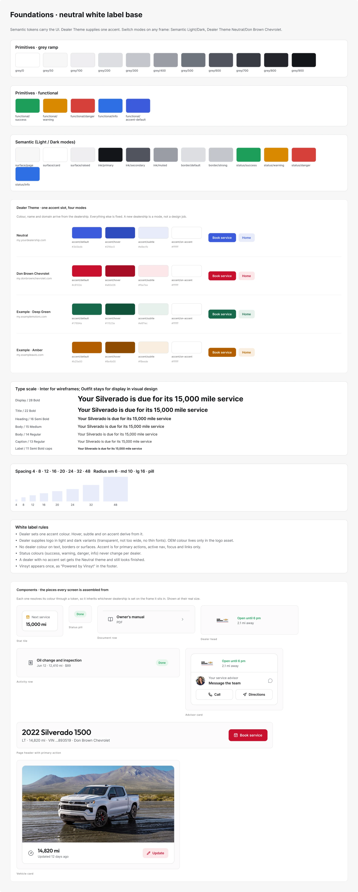

Vinsyt / Design system
Una plataforma, cuatro superficies
Un design system compartido para las apps del propietario y las comunicaciones del concesionario.
Rol
Estructura del design system, reglas de tema, tokens y componentes.
Plataforma compartida
Empezar por lo que comparten las cuatro áreas
La vista general conecta las experiencias del propietario y los programas de mensajería con el mismo historial del vehículo. El sistema conecta cómo se presentan: componentes, tipografía, espaciado y tratamientos de estado consistentes, con espacio para la marca del concesionario.
Vinsyt es el software con el que un concesionario opera su postventa: el historial del vehículo, el plan, las visitas y los mensajes que salen entre ellas. Cada superficie lee el mismo historial y lleva el nombre del mismo concesionario.
Un historial, cuatro áreas conectadas
Dos experiencias para el propietario y dos programas de mensajería comparten la plataforma y sus fundamentos de diseño.

Temas de concesionario
Cambiar la marca, no el componente
La comparación de temas mantiene fija la página del vehículo mientras cambia el acento del concesionario. Los botones, los estados seleccionados y los destacados toman del tema en lugar de rediseñarse para cada marca.
El color, el logo y el nombre entran por un solo lugar, y cada superficie con acento los lee desde un único token, lo que convierte a un concesionario nuevo en una configuración y no en un trabajo de diseño.
Entradas del tema de concesionario
La identidad del concesionario se configura a través de entradas de tema compartidas.

La misma pantalla, cuatro concesionarios
Dos de estos son modos configurados en el archivo de Figma. Los otros dos son ilustraciones, para mostrar que al sistema no le importa qué color llegue.

Reglas para la variación
Mantener el color de marca separado del significado
Un concesionario puede traer un acento rojo, verde o amarillo. Ese color no puede además cargar con todos los significados de estado de la interfaz.
Mantuve la urgencia en tratamientos de estado consistentes, hice que los colores de botón consideraran el contraste con sus etiquetas, y mantuve el cian del asistente separado del tema del concesionario.
Urgencia, contraste e identidad del asistente
La variación de tema está limitada por reglas de estado, contraste e identidad del asistente.

La única marca que no es del concesionario
Todo lo demás en la pantalla toma el nombre y el color del concesionario. El asistente conserva los suyos, porque es lo único que el propietario instala bajo su propio nombre.

Fundamentos compartidos
Fijar los fundamentos que no deben variar
La tipografía, los neutros, los colores de estado, el espaciado y los radios se mantienen compartidos. El inventario de componentes muestra luego esos fundamentos en uso, desde las etiquetas de estado y las tarjetas de servicio hasta las vistas del asesor y del vehículo.
Todo en cada superficie se resuelve a través de una variable. Esta mitad del sistema nunca se mueve: la misma escala, los mismos grises y los mismos cuatro colores de estado, sea cual sea el concesionario al que pertenece la app.
Una escala tipográfica compartida
La jerarquía tipográfica se mantiene fija en todos los temas de concesionario.

Color, espaciado y radios
Los fundamentos compartidos mantienen el producto consistente mientras cambia su identidad de concesionario.

La referencia completa
La hoja de referencia completa registra los valores y los patrones de componentes detrás del límite: qué puede cambiar un concesionario y qué se mantiene fijo.

Alcance y evidencia
Un sistema en producción, mostrado a través de Figma
Los ejemplos mostrados son frames de referencia en Figma. Dos temas de concesionario son modos configurados, y las combinaciones de color adicionales ilustran cómo se extienden las mismas reglas.
- Superficies: dos experiencias para el propietario y dos programas de mensajería
- Qué varía: color, logo, nombre y dominio, desde una sola entrada
- Qué se mantiene fijo: escala tipográfica, neutros, colores de estado, espaciado y radios
- Implementación: yo diseñé el sistema, el lead developer construyó el pipeline de tokens